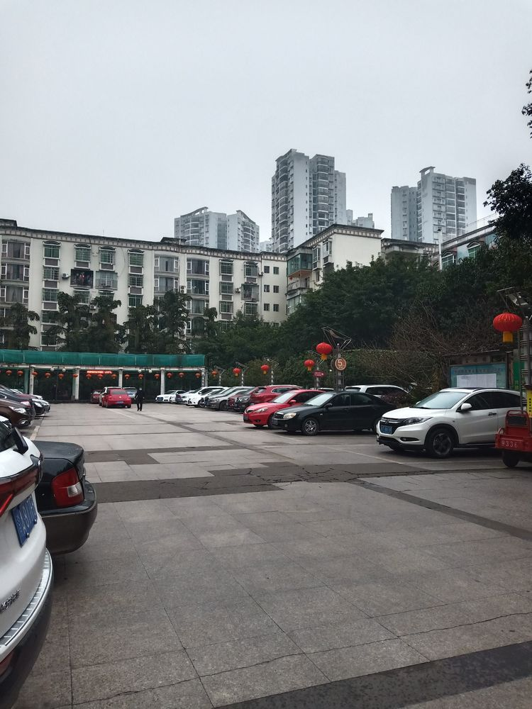
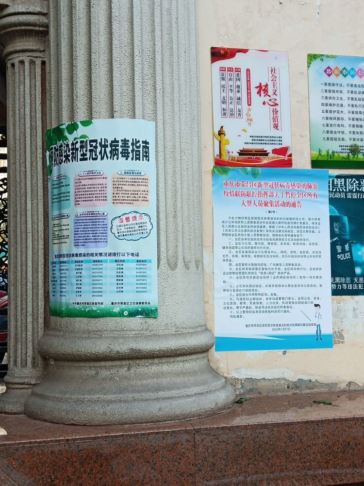
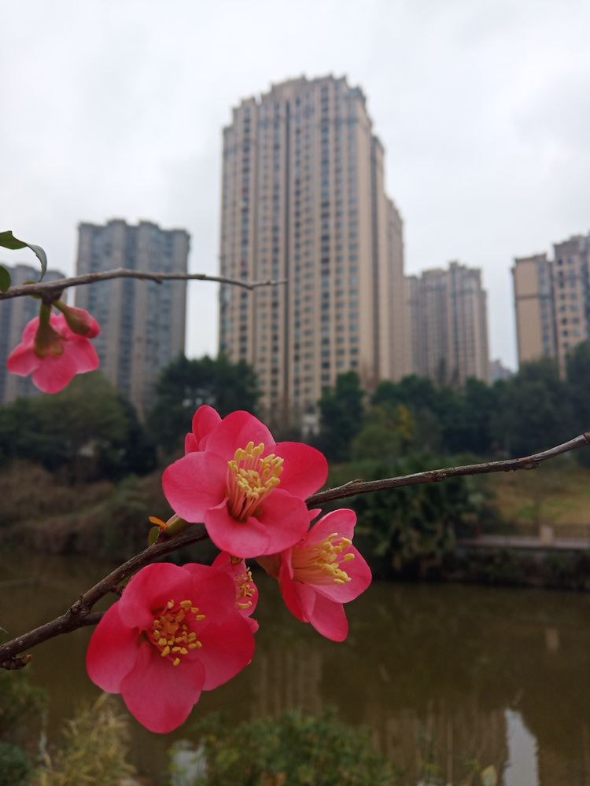
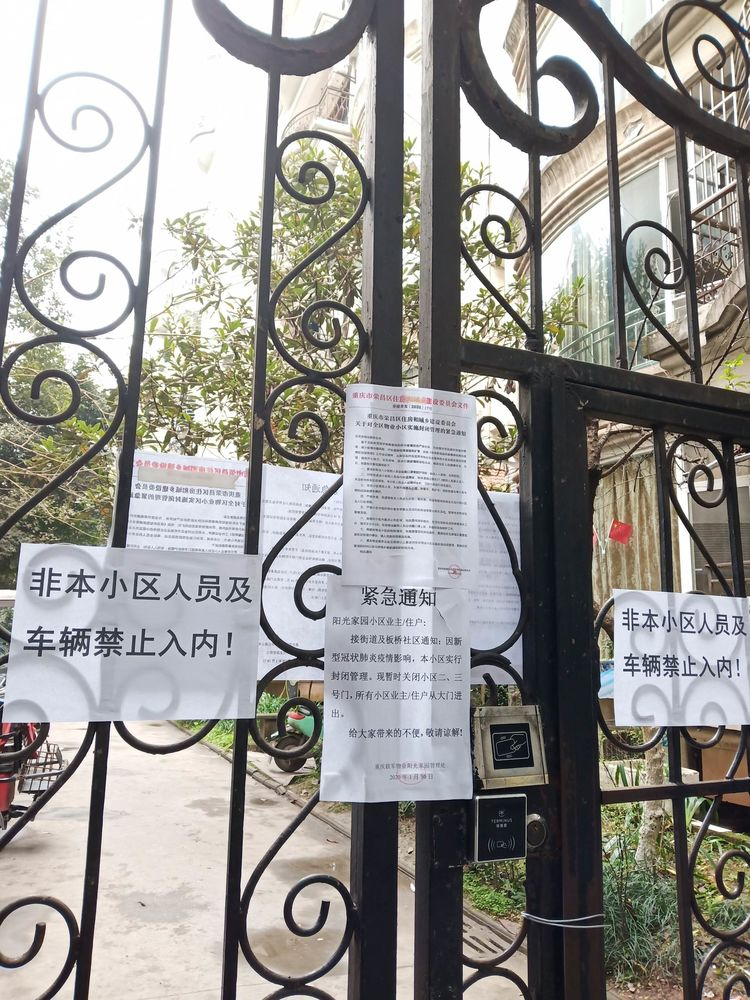
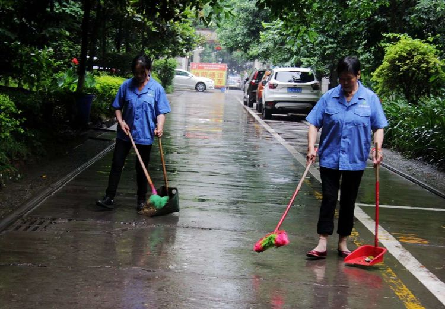
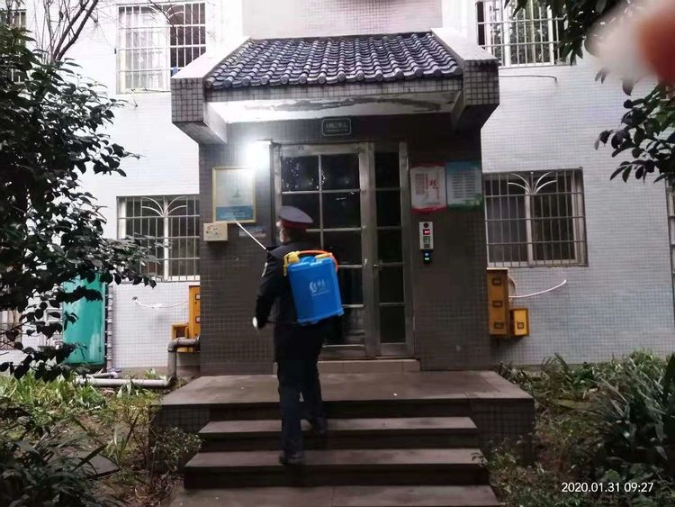

“疫情就是命令，防控就是责任”，当前，在举国上下与新型冠状病毒性肺炎作战的逆行者中，有这样一群人，他们没有防护服，只有平凡的工作服，他们没有豪情壮语，即便“硝烟滚滚”，依然守护着一方平安，他们就是辛勤的物业人。
幽美的小区环境是业主幸福生活的港湾，小区的每一天，因为物业人的管理与劳动变得更加整洁而和谐，然而，这场突如其来的“新冠”肺炎疫情打乱了大家平静安稳的生活，媒体上每天更新的疫情实时动态让人心生焦虑。在这场没有硝烟的防疫战中，荣昌区的所有物业人没有退缩，而是在“逆行”中坚守岗位，他们每天重复做着清洁楼道、消毒杀菌、防控宣传、出入登记、耐心劝阻等工作，守护着业主家园的第一道防线。

元月30日，当荣昌区发现了一起疑似病例时，所有的空气似乎凝重起来，街道和社区下发通知，要求各小区实行封闭管理，所有车辆及人员进出必须登记。某小区保安关上小区两道侧门没多久，一位中年男士怒气冲冲进入物业办公室，对着物业工作人员骂骂咧咧一通离开了，原因是关了侧门，出门不方便了，转了好大的一圈。不一会儿，一个个投诉电话打进来，大声喝斥，为什么不让他的亲戚进来，又或许是送包裹的进来没给开门，语气中充满了火药味儿，甚至命令。面对这些业主的不理解，物业人依然面带笑容，耐心解释。是啊，当疫情到来，业主们可以选择在家不出门避灾，而物业人因为行业的特殊性，却只能置个人安危而不顾，在各自岗位上尽职尽责，为业主们筑起坚固的防疫城墙。个别业主轻松地出了怨气，却没有想过物业人也是人，他们也同样是家庭的主力，同样需要安全与保护，理解与宽容。


有的老旧小区，进出的车辆人员相当复杂，实行进出人员管控后，大部份人员自觉地进行了量体温并登记，而少部分业主依然我行我素，不戴口罩，不听招呼，保安多次劝阻，也会遭来谩骂。然而，即便如此，为了打赢战役，所有的物业人却比平时更坚强、更努力：消毒人员背负着几十斤重的喷物器坚持每天对小区进行消毒，不遗漏任何一个卫生角落；清洁工增加小区清洁次数，及时清理业主生活垃圾，最大限度减少小区环境污染；保安人员做好车辆及人员出入登记，一个不漏地量体温，同时为业主送去祝福，缓解紧张情绪……。



来来往往的人流，进进出出的车辆，物业人没有安全的防护措施，也没有专业的专家指导，在逆行中承担了随时可能感染病毒的高风险，他们时刻关注疫情变化，及时跟进工作方式，以默默无闻的坚持让业主放心宅家、无后顾之忧；以平凡无私的劳动诠释了从业的初心！
致敬！逆行中的物业人！